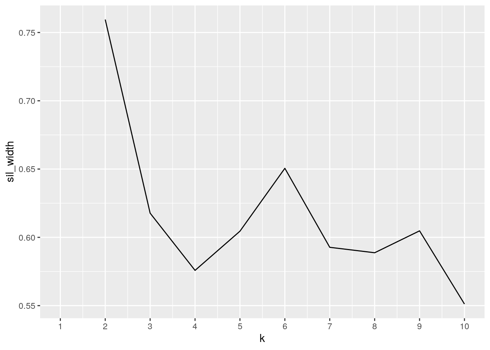

When first hearing about this project, I knew that I would want to work with a dataset that contained either genes, diseases, or chromosomes. These three topics are some of my favorite topics in Biology so I knew that incorporating them into my project would make it a lot more interesting for me. When looking for datasets I found many that dealt with genes and chromosomes but, I felt that diseases are much more relevant to the current problems within the world. I choose the us_contagius_diseases dataset as it contained the yearly counts of 6 diseases within the US from 1928 to 2011. I then looked for a dataset that contained information about the States within the United States as I could join them together easily from the variable State. I eventually found the state.x77 matrix and converted into a data set adding the variable region to list each region of the US the State appeared in. The US contagious diseases dataset contains the variables disease, state, year, weeks_reporting, count (cases), and population. Within the variable disease, there are six diseases: Hepatitis A, Measles, Mumps, Pertussis, Polio, Rubella, and Smallpox. The State matrix/ now data set had many variables: Population, Income, Illiteracy, Life expectancy, Murder rate, High school graduation rate, number of days of frost per year, and the Area of the State. When looking at the variables of the two datasets I expect to see an association between the total number of cases a state has with the Illiteracy rate and population of the State. In other words, I expect to see a positive correlation between the total number of cases a state has and the population and illiteracy rate.
library(dslabs)
library(dplyr)
library(tidyverse)
data(package = "dslabs")
disease <- us_contagious_diseases
head(disease)## disease state year weeks_reporting count population
## 1 Hepatitis A Alabama 1966 50 321 3345787
## 2 Hepatitis A Alabama 1967 49 291 3364130
## 3 Hepatitis A Alabama 1968 52 314 3386068
## 4 Hepatitis A Alabama 1969 49 380 3412450
## 5 Hepatitis A Alabama 1970 51 413 3444165
## 6 Hepatitis A Alabama 1971 51 378 3481798state <- data.frame(region = state.region, state.x77) %>% rownames_to_column(var = "state")
head(state)## state region Population Income Illiteracy Life.Exp Murder HS.Grad Frost
## 1 Alabama South 3615 3624 2.1 69.05 15.1 41.3 20
## 2 Alaska West 365 6315 1.5 69.31 11.3 66.7 152
## 3 Arizona West 2212 4530 1.8 70.55 7.8 58.1 15
## 4 Arkansas South 2110 3378 1.9 70.66 10.1 39.9 65
## 5 California West 21198 5114 1.1 71.71 10.3 62.6 20
## 6 Colorado West 2541 4884 0.7 72.06 6.8 63.9 166
## Area
## 1 50708
## 2 566432
## 3 113417
## 4 51945
## 5 156361
## 6 103766# Tidying
diseasew <- disease %>% pivot_wider(names_from = disease, values_from = count) #Giving each disease its own column (making it wide/ untidy) with its respective count residing in it.
diseasew %>% pivot_longer(cols = c("Hepatitis A":"Smallpox"),
names_to = "disease", values_to = "count") %>% na.omit() #Putting each disease into a signular column(tidying it) and their counts into its own singular column. ## # A tibble: 15,851 x 6
## state year weeks_reporting population disease count
## <fct> <dbl> <dbl> <dbl> <chr> <dbl>
## 1 Alabama 1966 50 3345787 Hepatitis A 321
## 2 Alabama 1966 50 3345787 Measles 1813
## 3 Alabama 1967 49 3364130 Hepatitis A 291
## 4 Alabama 1968 52 3386068 Hepatitis A 314
## 5 Alabama 1969 49 3412450 Hepatitis A 380
## 6 Alabama 1970 51 3444165 Hepatitis A 413
## 7 Alabama 1970 51 3444165 Mumps 392
## 8 Alabama 1970 51 3444165 Rubella 380
## 9 Alabama 1971 51 3481798 Hepatitis A 378
## 10 Alabama 1971 51 3481798 Mumps 1025
## # … with 15,841 more rowsstatew <- state %>% pivot_wider(names_from = state, values_from = Illiteracy) #Giving each State its own coulmn and having its Illiteracy rate as the value within the column, esentially making the dataset untidy.
statew %>% pivot_longer(cols = c("Alabama":"Wyoming"), names_to = "state",
values_to = "Illiteracy") %>% na.omit() #Bringing each State into a singular column with Illiteracy values in its own colum, tidying the data. ## # A tibble: 50 x 10
## region Population Income Life.Exp Murder HS.Grad Frost Area state
## <fct> <dbl> <dbl> <dbl> <dbl> <dbl> <dbl> <dbl> <chr>
## 1 South 3615 3624 69.0 15.1 41.3 20 50708 Alab…
## 2 West 365 6315 69.3 11.3 66.7 152 566432 Alas…
## 3 West 2212 4530 70.6 7.8 58.1 15 113417 Ariz…
## 4 South 2110 3378 70.7 10.1 39.9 65 51945 Arka…
## 5 West 21198 5114 71.7 10.3 62.6 20 156361 Cali…
## 6 West 2541 4884 72.1 6.8 63.9 166 103766 Colo…
## 7 North… 3100 5348 72.5 3.1 56 139 4862 Conn…
## 8 South 579 4809 70.1 6.2 54.6 103 1982 Dela…
## 9 South 8277 4815 70.7 10.7 52.6 11 54090 Flor…
## 10 South 4931 4091 68.5 13.9 40.6 60 58073 Geor…
## # … with 40 more rows, and 1 more variable: Illiteracy <dbl>I decided to join the datasets by doing an inner join as it would allow me to join the datasets by the variable State and return all the rows that there are matching variables. Joining by InnerJoin also allowed for the State varible- District of Columbia to be dropped as it was not in the State dataset but was in the US Contagious diseases dataset. There were 15851 observations in the US Contagious diseases dataset and 50 observations within the State dataset. After joining by using InnerJoin I had to filter by the year 1970 as a lot of the data from the State dataset came from the year 1970. I also removed the variable Population that came from the State dataset as it was very similar to the one within the US Contagious diseases Dataset; and made every factor into a character. After all the changes that I made there were 200 observations and 14 variables in the joined dataset.
IJ <- inner_join(disease, state, by = "state")
head(IJ)## disease state year weeks_reporting count population region Population
## 1 Hepatitis A Alabama 1966 50 321 3345787 South 3615
## 2 Hepatitis A Alabama 1967 49 291 3364130 South 3615
## 3 Hepatitis A Alabama 1968 52 314 3386068 South 3615
## 4 Hepatitis A Alabama 1969 49 380 3412450 South 3615
## 5 Hepatitis A Alabama 1970 51 413 3444165 South 3615
## 6 Hepatitis A Alabama 1971 51 378 3481798 South 3615
## Income Illiteracy Life.Exp Murder HS.Grad Frost Area
## 1 3624 2.1 69.05 15.1 41.3 20 50708
## 2 3624 2.1 69.05 15.1 41.3 20 50708
## 3 3624 2.1 69.05 15.1 41.3 20 50708
## 4 3624 2.1 69.05 15.1 41.3 20 50708
## 5 3624 2.1 69.05 15.1 41.3 20 50708
## 6 3624 2.1 69.05 15.1 41.3 20 50708IJ2 <- IJ %>% filter(year == "1970") %>% rename(weeks.reporting = weeks_reporting) %>%
mutate(across(where(is.factor), as.character)) %>% select(-Population)IJP <- IJ %>% mutate(pop_percentile = ntile(population, 5))
# I then selected the variables we wanted to look at and
# arranged the count variable in descending order so that we
# can see what disase and state had the highest cases and the
# litteracy that corresponded to the state
IJ2 %>% select(state, disease, count, Illiteracy) %>% arrange(desc(count)) %>%
glimpse()## Rows: 200
## Columns: 4
## $ state <chr> "Wisconsin", "California", "Texas", "Texas", "Michigan", "…
## $ disease <chr> "Mumps", "Hepatitis A", "Measles", "Rubella", "Mumps", "Mu…
## $ count <dbl> 11346, 9422, 8327, 8323, 7672, 6225, 5972, 5829, 5253, 502…
## $ Illiteracy <dbl> 0.7, 1.1, 2.2, 2.2, 0.9, 1.1, 2.2, 0.6, 1.1, 1.4, 0.8, 0.6…# T see what state has the least amount of cases then
# proportion it to pop
IJP %>% group_by(state, population) %>% summarise(total_cases = sum(count)) %>%
summarise(prop_case_pop = (total_cases/population)) %>% arrange(desc(prop_case_pop))## # A tibble: 4,138 x 2
## # Groups: state [50]
## state prop_case_pop
## <chr> <dbl>
## 1 Vermont 0.0297
## 2 Utah 0.0289
## 3 Wisconsin 0.0277
## 4 Vermont 0.0243
## 5 Vermont 0.0234
## 6 Utah 0.0228
## 7 Utah 0.0220
## 8 Montana 0.0214
## 9 Utah 0.0210
## 10 Vermont 0.0195
## # … with 4,128 more rowsWhen creating the summary statistics for my data, I first summarize the numeric variables by finding their minimums, 25 quartile, median, 75 quartiles, max, mean, standard deviation, and variance. I then reshaped the graph to make it easier to read. I found that the variable Area has a q25 of 36097 square miles, the median is 54277, Q75 is 81787,a mean of 70735.88, SD of 8.468. The Area variable has a high variance(7.17e+09) meaning its data is very spread out, we can see this by how far apart the minimum(1049) and maximum(566432) values are. Surprisingly, the count variable had a minimum of 0 meaning there was a disease with no cases for the year of 1970 and a maximum of 11346. Its quartile ranges (25, median, 75) are 167, 599, and 1543.25 . The mean of count was 1255.18, SD was 1.78, and a variance of 3.17e+06. Illiteracy has a minimum of 0, and a maximum of 2.8 meaning that one states whole population is literate while another state only has 97.2% of its population literate. The quartile ranges (25, median, 75) are 0.6,0.95, and 1.60; the mean is 1.17, SD is 6.049, and the variance is 3.66e+01. Population has a minimum of 300382, a maximum of 19953134m a mean of 4049108.32, a SD of 4.299e+06, and a variance of 1.84e+13. Similar to Area, population has a high variance meaning that the data for the population of states is very spread out. The respective quartile ranges for the variable population is 992048, 2707446, 4676501. The variable weeks reporting has a minimum of 0 and a max of 51 showing that one State did not have any cases of a disease in the year 1970, another state has 51 weeks of the year with cases from a disease. The mean amount of weeks reporting was 47.585 showing that a lot of States had a high number of weeks reporting per year as the SD(8.798) and variance(7.74e+01) are both relatively small showing that the data for weeks reporting is mostly in the upper week range. The respective quartile ranges are 49,51,and 51 weeks reporting. Each variable had 200 values, Area and population have 50 distinct values, count has 190, Illiteracy and weeks reporting has 20 distinct values.
# overall sum stats
IJ2 %>% select(c(Area, count, Illiteracy, population, weeks.reporting)) %>%
summarise_if(is.numeric, funs(min = min, q25 = quantile(.,
0.25), median = median, q75 = quantile(., 0.75), max = max,
mean = mean, sd = sd, vari = var)) %>% gather(stat, val) %>%
separate(stat, into = c("var", "stat"), sep = "_") %>% spread(stat,
val) %>% select(var, min, q25, median, q75, max, mean, sd,
vari)## var min q25 median q75 max
## 1 Area 1049.0 36097.0 54277.00 81787.00 566432.0
## 2 count 0.0 167.5 599.50 1543.25 11346.0
## 3 Illiteracy 0.5 0.6 0.95 1.60 2.8
## 4 population 300382.0 992048.0 2707446.00 4676501.00 19953134.0
## 5 weeks.reporting 0.0 49.0 51.00 51.00 51.0
## mean sd vari
## 1 70735.880 8.468169e+04 7.170988e+09
## 2 1255.180 1.779625e+03 3.167064e+06
## 3 1.170 6.049212e-01 3.659296e-01
## 4 4049108.320 4.299985e+06 1.848987e+13
## 5 47.585 8.797714e+00 7.739977e+01IJ2 %>% select(c(Area, count, Illiteracy, population, weeks.reporting)) %>%
summarise_if(is_numeric, function(n) n = n())## Area count Illiteracy population weeks.reporting
## 1 200 200 200 200 200IJ2 %>% select(c(Area, count, Illiteracy, population, weeks.reporting)) %>%
summarise_all(n_distinct)## Area count Illiteracy population weeks.reporting
## 1 50 190 20 50 20# cor
IJ2_cor <- IJ2 %>% select_if(is.numeric) %>% cor(use = "pair")
tidyIJ2cor <- IJ2_cor %>% as.data.frame %>% rownames_to_column("var1") %>%
pivot_longer(-1, names_to = "var2", values_to = "correlation") %>%
na.omit()
tidyIJ2cor## # A tibble: 100 x 3
## var1 var2 correlation
## <chr> <chr> <dbl>
## 1 weeks.reporting weeks.reporting 1
## 2 weeks.reporting count 0.232
## 3 weeks.reporting population 0.0965
## 4 weeks.reporting Income -0.0464
## 5 weeks.reporting Illiteracy 0.0277
## 6 weeks.reporting Life.Exp 0.177
## 7 weeks.reporting Murder -0.145
## 8 weeks.reporting HS.Grad -0.0319
## 9 weeks.reporting Frost -0.151
## 10 weeks.reporting Area -0.0906
## # … with 90 more rows# group by one region
IJ2 %>% group_by(region) %>% select(c(Area, count, Illiteracy,
population, weeks.reporting)) %>% summarise_if(is_numeric,
funs(min = min, q25 = quantile(., 0.25), median = median,
q75 = quantile(., 0.75), max = max, mean = mean, sd = sd,
vari = var)) %>% pivot_longer(-region) %>% pivot_wider(names_from = "region",
values_from = "value")## # A tibble: 40 x 5
## name `North Central` Northeast South West
## <chr> <dbl> <dbl> <dbl> <dbl>
## 1 Area_min 36097 1049 1982 6425
## 2 count_min 4 9 0 0
## 3 Illiteracy_min 0.5 0.6 0.9 0.5
## 4 population_min 617761 444330 548104 300382
## 5 weeks.reporting_min 19 11 0 0
## 6 Area_q25 55427 7521 37294. 82677
## 7 count_q25 254. 408. 229. 125.
## 8 Illiteracy_q25 0.6 0.7 1.37 0.6
## 9 population_q25 2055807. 946725 2473650. 694409
## 10 weeks.reporting_q25 49 50 49 46
## # … with 30 more rowsIJ2 %>% group_by(region) %>% select(c(Area, count, Illiteracy,
population, weeks.reporting)) %>% summarise_if(is_numeric,
function(n) n = n())## # A tibble: 4 x 6
## region Area count Illiteracy population weeks.reporting
## <chr> <int> <int> <int> <int> <int>
## 1 North Central 48 48 48 48 48
## 2 Northeast 36 36 36 36 36
## 3 South 64 64 64 64 64
## 4 West 52 52 52 52 52IJ2 %>% group_by(region) %>% select(c(Area, count, Illiteracy,
population, weeks.reporting)) %>% summarise_all(n_distinct)## # A tibble: 4 x 6
## region Area count Illiteracy population weeks.reporting
## <chr> <int> <int> <int> <int> <int>
## 1 North Central 12 47 5 12 9
## 2 Northeast 9 36 6 9 7
## 3 South 16 62 14 16 13
## 4 West 13 51 8 13 16# group by two (region and disease)
IJ2 %>% group_by(region, disease) %>% select(c(Area, count, Illiteracy,
population, weeks.reporting)) %>% summarise_if(is_numeric,
funs(min = min, q25 = quantile(., 0.25), median = median,
q75 = quantile(., 0.75), max = max, mean = mean, sd = sd,
vari = var)) %>% pivot_longer(-c(disease, region)) %>%
pivot_wider(names_from = c("region", "disease"), values_from = "value")## # A tibble: 40 x 17
## name `North Central_… `North Central_… `North Central_… `North Central_…
## <chr> <dbl> <dbl> <dbl> <dbl>
## 1 Area… 36097 36097 36097 36097
## 2 coun… 21 49 58 4
## 3 Illi… 0.5 0.5 0.5 0.5
## 4 popu… 617761 617761 617761 617761
## 5 week… 19 44 45 45
## 6 Area… 55427 55427 55427 55427
## 7 coun… 283. 242. 359 149.
## 8 Illi… 0.6 0.6 0.6 0.6
## 9 popu… 2055807. 2055807. 2055807. 2055807.
## 10 week… 47.8 47.5 50.8 49.8
## # … with 30 more rows, and 12 more variables: `Northeast_Hepatitis A` <dbl>,
## # Northeast_Measles <dbl>, Northeast_Mumps <dbl>, Northeast_Rubella <dbl>,
## # `South_Hepatitis A` <dbl>, South_Measles <dbl>, South_Mumps <dbl>,
## # South_Rubella <dbl>, `West_Hepatitis A` <dbl>, West_Measles <dbl>,
## # West_Mumps <dbl>, West_Rubella <dbl>When grouping by the variable region, and tidying the tables so that each region have their own column and the summary statistics have their own rows. I found that the West has the highest values for the variable area, followed by the north central, then south, finally with the northeast region coming in last with the lowest variables. While looking at the variable count I found that West had the lowest value in for almost all of the summary statistics, followed by the south, North east, and the north central having the highest values. Northcentral had the lowest illiteracy values, followed by the northeast, west, and finally south having the highest values. The West had the lowest population values, followed by the south, northcentral ,and north east. The west had the lowest weeks reporting values, followed by northcentral, north east, and the south. Overall the west usually had the lowest summary statistics, the other 3 regions do not have an overall set place as they changed from 2nd lowest to highest with every variable. The North Central has 48 of each variable(area, count, illiteracy, population, and weeks reporting), the Northeast has 36, the South has 64, and the West has 52. Of the variables the North Central has 12 distinct values for area and population, 47 for count, 5 for illiteracy, and 9 for weeks reporting. The North East has 9 distinct values for area and population, 36 for count, 6 for illiteracy, and 7 for weeks reporting. The south has 16 distinct values for area and population, 62 for count, 14 for illiteracy, and 13 for weeks reporting. The west has 51 distinct values for count, 8 for illiteracy, 16 for weeks reporting, and 13 for area and population. When grouping by two variables region and disease the table was very redundant of the last grouping with only the variables count and weeks reporting change for each region/ disease.
tidyIJ2cor %>% ggplot(aes(var1, var2, fill = correlation)) +
geom_tile() + scale_fill_gradient2(low = "pink", mid = "white",
high = "purple") + geom_text(aes(label = round(correlation,
2)), color = "black", size = 3) + theme(axis.text.x = element_text(angle = 90,
hjust = 1)) + xlab("") + ylab("") + coord_fixed() + ggtitle("Correlation Heatmap of Numeric Variables")The correlation heatmap allows for us to visualize the correlation between two variables. Along each axis are the variables, the colored boxes is the correlation between the two variables. In this figure, purple is positive, white is zero, and pink is negative. The diagonal line of purple shows the perfect correlation between two of the same variables. Excluding the purple diagonal line the highest correlation in my heat map is a correlation between murder and illiteracy rate (0.7). The highest negative correlation is between murder and life expectancy (-0.78). This shows that there is a negative correlation between murder and life expectancy so as the murder rate increases the life expectancy of that state decreases. Population and count have a high positive correlation (0.61), revealing that as the population of a state increases so does the count of diseases. We can also see a strong negative correlation between illiteracy and Hs. Grade rate (-0.66), as high school grade rate increase illiteracy decreases. Surprisingly, there is also a strong negative correlation between the number of frost days a state has to the murder rate (-0.54), meaning as frost days increase murder rate decreases. There does not seem to be a correlation between illiteracy and count (0.01), illiteracy and weeks reporting (0.03), count and Hs. Grad (0.01), weeks reporting and Hs. Grad (-0.03), or population and area(0.01).
IJ2 %>% group_by(state) %>% mutate(total_cases = sum(count)) %>%
ggplot(aes(population, Illiteracy, color = total_cases)) +
geom_point() + geom_smooth(method = "lm", se = FALSE) + scale_x_log10() +
scale_y_continuous(breaks = seq(0, 3, 0.5)) + scale_color_gradient(low = "pink",
high = "purple") + ggtitle("Relationship of Total Cases vs. Population and Illiteracy Rates") +
labs(color = "Total Cases", y = "Illiteracy Rate", x = "State Population")For Graph 2: Relationship of Total Cases vs. Population and Illiteracy Rates I decided to graph the state populations on the x-axis and the illiteracy rates on the y-axis, then colored by the total number of cases in each state. The x-axis was plotted on a log10 scale. This graph shows that there is positive relationship between state population and illiteracy rates. By coloring the total cases with the lowest amount of total cases being pink and the highest being purple, we can see that states with a smaller population have a lower amount of cases(light pink), and states with higher populations have larger amount of total cases (deep purple). There also appears to be a slight relationship between Illiteracy rate, state population, and total cases as in states with a lower illiteracy rate/population have a smaller amount of total cases. Additionally the graph shows that most of the state’s populations fall between 1e6 and 1e7 and the populations that fall within this range have the most visual variance between total cases and illiteracy rates.
ggplot(IJ2, aes(x = region, y = count, fill = disease)) + geom_bar(stat = "summary",
position = "dodge") + geom_errorbar(stat = "summary", position = "dodge") +
ggtitle("Region vs. Count of Diseases") + scale_fill_manual(values = c("#FFCCFF",
"#FF99FF", "#ff66ff", "#ff33ff"))Graph 3: Region vs. Count of Diseases is a bar graph that shows the count of each disease within a region. For Graph 3, I decided to graph region on the x-axis, count on the y-axis, and fill each bar with a color designated to a disease. Out of the four disease: Hepatitis A, Measles, Mumps, and Rubella, the disease Mumps had the most amount of cases per region. The North Central region had the highest amount of total mumps cases and the West region had the lowest. The North Central Mumps count also had the largest distribution of total cases as seen by the error bars. No other disease followed a similar trend across the four regions. It is apparent that The North Central region has the highest amount of total cases within the 4 regions, and the West region has the least. The count per diseases within the South region is within 800 counts of each other showing that there is not a large distribution between the counts of diseases. While other regions have a larger distribution (around 2000) between their diseases.
Without considering the error bars, the Northeast had the highest count of Hepatitis A (around 1700), followed by the West( around 1100), North Central(around 900), and the South(around 800). The South had the most amount of cases of Measles ( around 1300), followed by the North Central (around 1200), the North East(around 700), and the West (around 400). Of the regions for the disease mumps the region North Central has the highest count (around 2800), the north east had the second highest (around 2100), the south had the second lowest (around 1600), and the West had the lowest( around 1500). The last disease, Rubella had its highest count in the North central region (around 1250), the next highest occurred in the South (around 1200), followed by the West(around 1100), lastly the region with the least amount of Rubella cases the North east (around 700). Overall the disease mumps within the North Central region has the highest count, while the disease measles within the West region had the lowest count.
library(cluster)
IJP <- IJ2 %>% select(c(population, count, weeks.reporting)) #choosing what to select to pam
pam1 <- IJP %>% scale %>% pam(k = 2) #proccessing and scaling data
sil_width <- vector() #empty vector to hold mean sil width
for (i in 2:10) {
kms <- kmeans(IJP, centers = i) #compute kmeans solution
sil <- silhouette(kms$cluster, dist(IJP)) #get sil widths
sil_width[i] <- mean(sil[, 3]) #take means
}
ggplot() + geom_line(aes(x = 1:10, y = sil_width)) + scale_x_continuous(name = "k",
breaks = 1:10) #silhouette method, shows me that using 2 clusters is best for my data
# run cluster analysis
IJF <- IJP %>% mutate(cluster = as.factor(pam1$clustering)) #creates a column for the cluster assignment in the dataframe and adds which cluster each row belongs to into the df
IJF %>% group_by(cluster) %>% summarise_if(is.numeric, mean,
na.rm = T) #summarizes the mean values for the three numberic variables for the clusters## # A tibble: 2 x 4
## cluster population count weeks.reporting
## <fct> <dbl> <dbl> <dbl>
## 1 1 2186806. 518. 46.8
## 2 2 9788039. 3526. 50.1# visualize clusters
library(GGally)
ggpairs(IJF, columns = 1:3, aes(color = cluster)) #All pairwise combinations of the 3 variablesggplot(IJF, aes(x = population, y = count, color = cluster)) +
geom_point() + ggtitle("Clusters Assignments of Count and Population") #make pretty ggplot to show differnt clusters# goodness of fit
plot(pam1, which = 2) #shows the avg. sil with 0.52 is reasonableFor the Dimensionality reduction part of the project I decided to use k-means/PAM clustering on the variables: population, count, and weeks reporting. I scaled my data to standardized the values before performing the analysis on it. After scaling my data I created a graph to visualize how many clusters I should have as it is hard to tell just from the data. From the graph I found that I only needed to have 2 clusters when running the PAM Analysis. I then ran the cluster analysis and added a column into the data frame to show which cluster each row belongs to. After that I summarized the mean values for each cluster to see how different they are from each other. Cluster 1 had a mean population of 2186806, count of 518.2583, and a mean week reporting of 46.77483. Cluster 2 on the other hand had a mean population of 9788039, count of 3526.1020, and a mean week reporting of 50.08163. Just from viewing the means I can assume that cluster 1 consist of states with a lower population, count, and weeks reporting.
Next I created two graphs of my clusters by using the data frame with the cluster assignments in it. The first graph shows the correlation between the variables, as well as the pairwise combinations. Population and count had the highest correlation of 0.609, followed by count and weeks reporting (0.232), and weeks reporting and population (0.097). From the graph I can also see that the clusters are more distinct within the population and graph variable and less distinct within population and weeks reporting. The second graph is a simple ggplot to show the cluster assignments of count and population. This graph a bigger version of one of the graphs in graph 1. Finally, I ran a goodness of fit to see the average silhouette width to see how strong of a structure I found. My average silhouette width is 0.52, showing that a reasonable structure has been found.